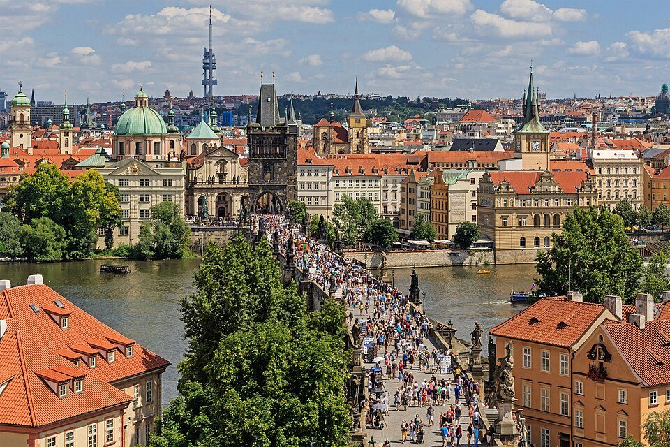

Выберите направление
Укажите гражданство, страну назначения и цель поездки.
Учёба, работа, путешествия и переезд за рубеж.
Поможем разобраться в требованиях и определить дальнейшие шаги.
Не нужно знать всё заранее.
Начните с того, что важно для вас.
Укажите гражданство, страну назначения и цель поездки.
Расскажите о своей ситуации и выберите удобный способ связи.
Мы изучим ваш запрос, объясним возможные варианты и поможем определить дальнейшие шаги.
Выберите страну, затем цель поездки.
Ваш выбор уже будет в заявке.
Предварительный каталог. Доступность услуг уточняется индивидуально.
Другие доступные направления ↗
CZКакая у вас цель поездки?
Visa2Go помогает разобраться в визовых требованиях, возможностях обучения, трудоустройства и переезда за рубеж. Мы консультируем по индивидуальным ситуациям, помогаем определить подходящий порядок действий и подготовить документы в соответствии с требованиями выбранной страны.
Каждая ситуация индивидуальна. Мы помогаем разобраться в возможностях и требованиях, но не гарантируем выдачу визы или положительное решение государственных органов.
Расскажите о своей ситуации. Мы рассмотрим ваш запрос индивидуально и сообщим, чем можем помочь.
Начните с консультации и узнайте, какие шаги необходимо
предпринять для реализации ваших планов.